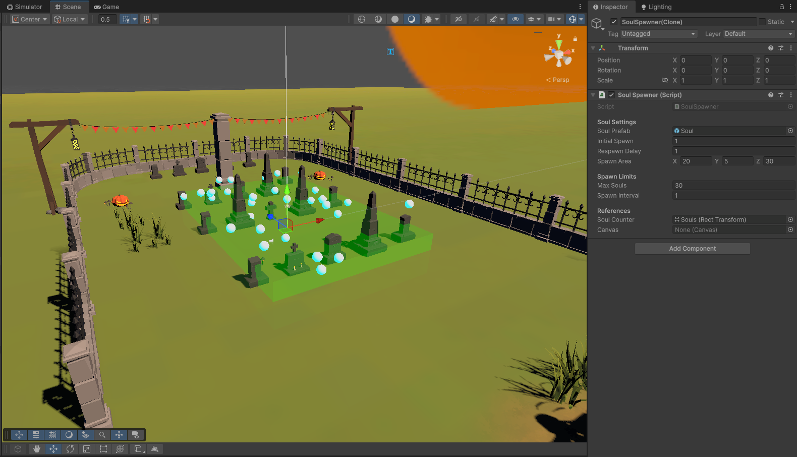

This page highlights key code samples and systems I've developed.
Click a section to expand and view the code sample.
A gameobject that spawns the souls, this can be adjusted in size and stats such as how many are spawned on start, maximum amount spawned at a time and the time between each soul spawned. This allows the core mechanic to be easily adjusted for each level, speeding up level creation and allowing for variety in gameplay.

A singleton Unity manager that controls day/night cycles, weather, and sun/moon lighting. It updates time progression and environmental effects each frame, using modular subsystems for time, weather, and lighting. Designed with clear separation of concerns, it ensures maintainability and easy extension while providing realistic, dynamic world simulation.
// DynamicWorldSystem.cs (snippet)
public class DynamicWorldSystem : MonoBehaviour
{
// Singleton instance of the DynamicWorldSystem
public static DynamicWorldSystem Instance { get; private set; }
// Subsystems managing time of day and weather
public TimeOfDaySystem timeOfDaySystem = new TimeOfDaySystem();
public WeatherSystem weatherSystem = new WeatherSystem();
public MoonController moonController;
// Controls the sun light
public SunController sunController;
[Header("Sunlight Colours")]
public Color dawnColour = Color.red;
public Color middayColour = Color.white;
// Reference to the scene directional light (the sun)
[Header("Directional Light Reference (Ensure This Is Set)")]
[SerializeField] private Light sunLight;
//Reference to scene directional light (the moon)
[Header("Moon Light (Ensure This Is Set)")]
[SerializeField] private Light moonLight;
[Header("Moon Visual Model")]
[SerializeField] private GameObject moonMesh;
void Awake()
{
Instance = this;
// Singleton pattern enforcement
if (Instance != null && Instance != this)
{
Destroy(gameObject);
return;
}
// Ensures this system persists across scene loading
DontDestroyOnLoad(gameObject);
if (sunLight == null)
{
Debug.LogError("DynamicWorldSystem: SunLight is not assigned! SunController will not work.");
return;
}
if (moonLight == null)
{
Debug.LogWarning("DynamicWorldSystem: MoonLight is not assigned! Nighttime lighting will not function.");
}
sunController = new SunController(sunLight);
moonController = new MoonController(moonLight, moonMesh);
}
private void Start()
{
timeOfDaySystem.CurrentTimeOfDay = 6f; //6am
}
void Update()
{
timeOfDaySystem.UpdateTime();
weatherSystem.UpdateWeather(timeOfDaySystem.CurrentTimeOfDay);
// Update the lighting based on current time, sunrise/sunset, and color gradients
sunController?.UpdateSun(
timeOfDaySystem.CurrentTimeOfDay,
timeOfDaySystem.sunriseTime,
timeOfDaySystem.sunsetTime,
dawnColour,
middayColour
);
// Update the moon based on current time
moonController.UpdateMoon(
timeOfDaySystem.CurrentTimeOfDay,
timeOfDaySystem.sunriseTime,
timeOfDaySystem.sunsetTime,
sunController.GetSunAngle(timeOfDaySystem.CurrentTimeOfDay)
);
//Debug.Log(timeOfDaySystem.GetFormattedTime());
}
}
TimeOfDaySystem manages the progression of time within the dynamic world, simulating a 24-hour day cycle. It allows the length of a full day to be set in seconds, enabling flexible time scaling for gameplay purposes. The class tracks the current time of day (clamped between 0 and 24 hours) and updates it every frame based on real time. It also stores configurable sunrise and sunset times, which can be used by other systems to adjust lighting and environmental effects. Additionally, it provides a formatted string representing the current time in “HH:MM” format, useful for UI display or debugging. This encapsulated system abstracts time management, making it modular and easy to integrate with other environmental systems in the project.
// DynamicWorldSystem.cs - Time Of Day Class
[System.Serializable]
public class TimeOfDaySystem
{
#if UNITY_EDITOR
//Set to 10 minutes by default
[SerializeField]
#endif
private float dayLengthInSeconds = 600f;
#if UNITY_EDITOR
[SerializeField, Range(0f, 24f)]
#endif
private float currentTimeOfDay;
public float CurrentTimeOfDay
{
get => currentTimeOfDay;
set => currentTimeOfDay = Mathf.Clamp(value, 0f, 24f);
}
public float sunriseTime = 5.5f;
public float sunsetTime = 19.5f;
private float TimeScale => 24f / dayLengthInSeconds;
public void UpdateTime()
{
CurrentTimeOfDay += Time.deltaTime * TimeScale;
if (CurrentTimeOfDay >= 24f)
CurrentTimeOfDay -= 24f;
}
public string GetFormattedTime()
{
int hour = Mathf.FloorToInt(CurrentTimeOfDay);
int minutes = Mathf.FloorToInt((CurrentTimeOfDay - hour) * 60);
return string.Format("{0:00}:{1:00}", hour, minutes); // Format as HH:MM
}
}
SunController manages the sun’s lighting and rotation based on the time of day. It takes a directional light and updates its rotation to simulate the sun moving across the sky. Using the DayNightHelper class, it calculates a sun fade value between 0 (night) and 1 (day) to smoothly adjust the sun’s brightness and color—from dawn to midday tones. The sun light is disabled during nighttime to improve performance. This class encapsulates sun-specific behavior, making the lighting system modular and easy to maintain within the dynamic world environment.
// DynamicWorldSystem.cs - Sun Controller Class
public class SunController
{
private Light directionalLight;
public SunController(Light sunLight)
{
if (sunLight == null)
{
Debug.LogError("SunController: Provided sunLight is null.");
}
directionalLight = sunLight;
}
public void UpdateSun(float timeOfDay, float sunriseTime, float sunsetTime, Color dawnColour, Color MiddayColour)
{
if (directionalLight == null)
{
Debug.LogError("SunController: Cannot update lighting as the directional light cannot be found.");
return;
}
// Calculate sun fade: 0 = night, 1 = day
float sunFade = DayNightHelper.CalculateSunFade(timeOfDay, sunriseTime, sunsetTime);
//Rotate the light to simulate sun movement
float sunAngle = (timeOfDay / 24f) * 360 - 90f;
directionalLight.transform.rotation = Quaternion.Euler(new Vector3(sunAngle, 170f, 0f));
directionalLight.enabled = sunFade > 0.01f;
directionalLight.intensity = Mathf.Lerp(0f, 1f, sunFade);
directionalLight.color = Color.Lerp(dawnColour, MiddayColour, sunFade); // Set dawnColour & middayColour in inspector
}
public float GetSunAngle(float timeOfDay)
{
return (timeOfDay / 24f) * 360 - 90f;
}
}
MoonController is a serializable class that controls the moon’s position, rotation, and light intensity based on the time of day. It smoothly moves the moon across the sky during the night, from just below the horizon at sunset to sunrise. The moonlight gets brighter as the sun fades, creating a natural day-to-night lighting transition. If there is a moon mesh assigned, it’s positioned to always face the player’s camera for better immersion. If not, only the moonlight rotates to simulate the moon’s movement. This class keeps moon-related logic separate and easy to update, making it simple to maintain and add new features within the dynamic world system.
// DynamicWorldSystem.cs - Moon Controller Class
[System.Serializable]
public class MoonController
{
private Light moonLight;
private GameObject moonMesh;
[SerializeField]
private float moonDistance = 5000f;
public MoonController(Light moonLight, GameObject moonVisual = null)
{
this.moonLight = moonLight;
this.moonMesh = moonVisual;
}
public void UpdateMoon(float timeOfDay, float sunriseTime, float sunsetTime, float sunAngle)
{
if (moonLight == null) return;
// Night defined as before sunrise or after sunset
bool isNight = timeOfDay < sunriseTime || timeOfDay > sunsetTime;
// Calculate night duration (handles crossing midnight)
float nightDuration = (sunriseTime + 24f - sunsetTime) % 24f;
float timeSinceSunset = (timeOfDay + 24f - sunsetTime) % 24f;
float nightProgress = Mathf.Clamp01(timeSinceSunset / nightDuration);
// Smooth continuous moon movement: from -10° at sunset, making a full arc across the sky to 350° at sunrise
float moonElevation = Mathf.Lerp(-10f, 350f, nightProgress);
// Use moonElevation as the X rotation angle for moon position
Quaternion moonRotation = Quaternion.Euler(moonElevation, 0f, 0f);
Vector3 moonDir = moonRotation * new Vector3 (0,0,-1);
// Calculate moon light intensity fade (inverse of sun fade)
float sunFade = DayNightHelper.CalculateSunFade(timeOfDay, sunriseTime, sunsetTime);
float moonFade = 1f - sunFade;
// Fully fade in moon during mid-night hours
if (isNight && (timeOfDay > sunsetTime + 1f || timeOfDay < sunriseTime - 1f))
{
moonFade = 1f;
}
moonLight.intensity = moonFade * 0.1f;
moonLight.enabled = moonFade > 0.01f;
// Only handle moon mesh if it's set
if (moonMesh != null)
{
moonMesh.SetActive(isNight);
if (isNight)
{
Vector3 cameraPos = Camera.main.transform.position;
Vector3 moonWorldPos = cameraPos + moonDir * moonDistance;
moonMesh.transform.position = moonWorldPos;
moonMesh.transform.LookAt(cameraPos); // Always face the camera
// Set moonlight to shine from the moon's position toward the camera/world
moonLight.transform.position = moonWorldPos;
moonLight.transform.rotation = Quaternion.LookRotation(cameraPos - moonWorldPos);
}
}
else
{
// If no mesh, just rotate the moonlight using calculated direction
moonLight.transform.rotation = Quaternion.LookRotation(-moonDir);
}
}
}
WeatherController is a modular class responsible for managing and updating the current weather state within the dynamic world system. It encapsulates weather logic, allowing easy switching between defined weather types and supporting future expansion for dynamic weather behaviors.
// DynamicWorldSystem.cs - Weather Controller Class
[System.Serializable]
public class WeatherController
{
public enum WeatherType { Sunny, Rainy, Snowy }
public WeatherType CurrentWeather { get; private set; } = WeatherType.Sunny;
public void UpdateWeather(float currentTimeOfDay)
{
// Implement weather update logic here
}
public void SetWeather(WeatherType newWeather)
{
CurrentWeather = newWeather;
// Optionally notify listeners here
}
}
DayNightHelper is a static utility class that calculates sun brightness as a normalized fade value between 0 and 1, based on the current time of day relative to sunrise and sunset. This enables smooth and dynamic lighting transitions to support realistic day/night cycles.
// DynamicWorldSystem.cs - Day Night Helper Class
public static class DayNightHelper
{
// Calculates a fade value between 0 and 1 based on time of day and sunrise/sunset times
public static float CalculateSunFade(float timeOfDay, float sunriseTime, float sunsetTime)
{
if (timeOfDay >= sunriseTime && timeOfDay <= sunsetTime)
{
return 1f; // Daytime full brightness
}
else if (timeOfDay > sunsetTime && timeOfDay < sunsetTime + 1f)
{
return Mathf.InverseLerp(sunsetTime + 1f, sunsetTime, timeOfDay); // Fade out at sunset
}
else if (timeOfDay > sunriseTime - 1f && timeOfDay < sunriseTime)
{
return Mathf.InverseLerp(sunriseTime - 1f, sunriseTime, timeOfDay); // Fade in at sunrise
}
else
{
return 0f; // Night time
}
}
}
A timer system made in Unity using C# that counts down during gameplay. The timer can change based on player actions like drinking coffee, which reduces the remaining time but keeps it above a minimum limit. It updates the timer display on the screen, handles what happens when time runs out, and works with player controls and sound effects to make the game more interactive.
// CountdownTimer.cs (snippet)
public class CountdownTimer : MonoBehaviour
{
// Variable declarations
[SerializeField] private GameObject gameOverScreen;
[SerializeField] private EndGameScript endGameScript;
private FirstPersonController firstPersonController;
private FootstepSounds footstepSounds;
public TextMeshProUGUI timerText;
// Timer Variables
public float startTime = 180f; // 3 minutes
private float adjustedStartTime;
private float currentTime;
private bool isTimerRunning = false;
// Time Reduction Variables
private int coffeeCount = 0;
public float baseReduction = 20f; // Base reduction time in seconds
public float exponent = 1.5f; // Exponent for the reduction formula
void Update()
{
if (isTimerRunning)
{
currentTime -= Time.deltaTime;
if (currentTime <= 0 && endGameScript.gameEnded == false)
{
currentTime = 0;
isTimerRunning = false;
Debug.Log("Timer finished!");
timerText.gameObject.SetActive(false);
ShowGameOverScreen();
}
else if (currentTime <= 0 && endGameScript.gameEnded == true)
{
currentTime = 0;
isTimerRunning = false;
Debug.Log("Timer finished!");
timerText.gameObject.SetActive(false);
}
UpdateHUD();
}
}
void UpdateHUD()
{
int minutes = Mathf.FloorToInt(currentTime / 60f);
int seconds = Mathf.FloorToInt(currentTime % 60f);
timerText.text = $"Break Ends In: {minutes:00}:{seconds:00}";
}
public void DrinkCoffee()
{
firstPersonController.UnlockSprintForDuration(10);
footstepSounds.ActivateCoffeeEffect(10f);
coffeeCount++;
float reduction = baseReduction * Mathf.Pow(coffeeCount, exponent);
adjustedStartTime = Mathf.Max(10f, startTime - reduction);
currentTime = adjustedStartTime;
// Debug.Log($"Coffee: {coffeeCount}, New Time: {adjustedStartTime:F1}s");
}
}
CoffeePickup is a Unity C# script that manages the interaction when the player collects a coffee item. Upon player collision, it triggers an audio cue, displays a UI message, and communicates with the game’s timer system to apply gameplay effects like reducing the countdown time. The script handles disabling and optionally destroying the pickup object after use to prevent repeated collection.
// CoffeePickup.cs (snippet)
public class CoffeePickup : MonoBehaviour
{
private string playerTag = "Player";
FootstepSounds footstepSounds;
[Header("Audio Setup")]
public AudioClip pickupSound;
public float volume = 1.0f;
public CountdownTimer countdownTimer;
public TextMeshProUGUI coffeeTextObject;
public string coffeeMessage;
private FirstPersonController firstPersonController;
private MeshRenderer meshRenderer;
private BoxCollider boxCollider;
void Start()
{
coffeeTextObject.gameObject.SetActive(false);
if (countdownTimer == null)
{
countdownTimer = FindObjectOfType();
}
firstPersonController = GameObject.FindGameObjectWithTag("Player").GetComponent();
meshRenderer = GetComponent();
boxCollider = GetComponent();
}
void OnTriggerEnter(Collider other)
{
if (other.CompareTag(playerTag))
{
StartCoroutine(CoffeeTextPopUp());
AudioSource playerAudio = other.GetComponent();
meshRenderer.enabled = false;
boxCollider.enabled = false;
playerAudio.PlayOneShot(pickupSound);
if (countdownTimer != null)
{
countdownTimer.DrinkCoffee();
}
}
}
private IEnumerator CoffeeTextPopUp()
{
coffeeTextObject.gameObject.SetActive(true);
yield return new WaitForEndOfFrame();
coffeeTextObject.text = coffeeMessage;
yield return new WaitForSeconds(5);
coffeeTextObject.gameObject.SetActive(false);
if (!gameObject.CompareTag("EndCoffee"))
{
Destroy(gameObject);
}
}
}